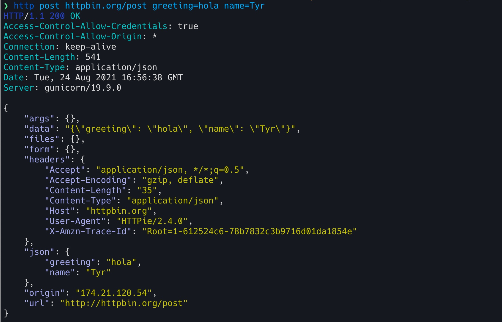
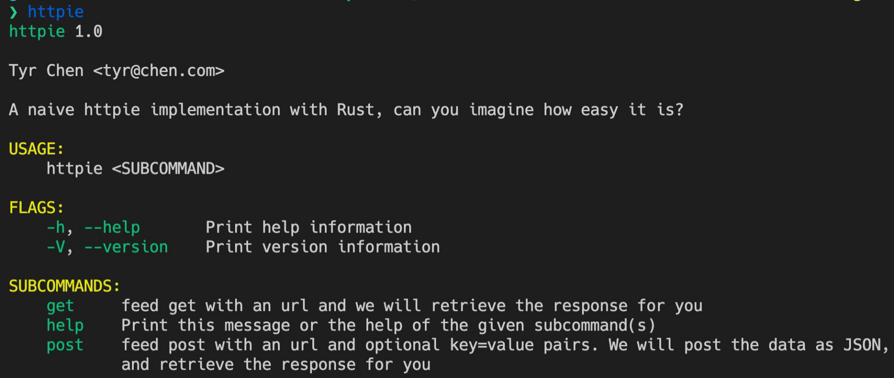
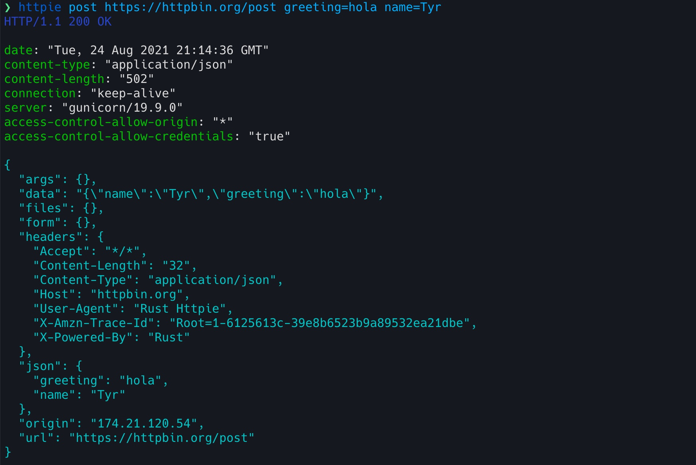

- 00 开篇词 让Rust成为你的下一门主力语言.md.html
- 01 内存：值放堆上还是放栈上，这是一个问题.md.html
- 02 串讲：编程开发中，那些你需要掌握的基本概念.md.html
- 03 初窥门径：从你的第一个Rust程序开始！.md.html
- 04 get hands dirty：来写个实用的CLI小工具.md.html
- 05 get hands dirty：做一个图片服务器有多难？.md.html
- 06 get hands dirty：SQL查询工具怎么一鱼多吃？.md.html
- 07 所有权：值的生杀大权到底在谁手上？.md.html
- 08 所有权：值的借用是如何工作的？.md.html
- 09 所有权：一个值可以有多个所有者么？.md.html
- 10 生命周期：你创建的值究竟能活多久？.md.html
- 11 内存管理：从创建到消亡，值都经历了什么？.md.html
- 12 类型系统：Rust的类型系统有什么特点？.md.html
- 13 类型系统：如何使用trait来定义接口？.md.html
- 14 类型系统：有哪些必须掌握的trait？.md.html
- 15 数据结构：这些浓眉大眼的结构竟然都是智能指针？.md.html
- 16 数据结构：Vec_T_、&[T]、Box_[T]_ ，你真的了解集合容器么？.md.html
- 17 数据结构：软件系统核心部件哈希表，内存如何布局？.md.html
- 18 错误处理：为什么Rust的错误处理与众不同？.md.html
- 19 闭包：FnOnce、FnMut和Fn，为什么有这么多类型？.md.html
- 20 4 Steps ：如何更好地阅读Rust源码？.md.html
- 21 阶段实操（1）：构建一个简单的KV server-基本流程.md.html
- 22 阶段实操（2）：构建一个简单的KV server-基本流程.md.html
- 23 类型系统：如何在实战中使用泛型编程？.md.html
- 24 类型系统：如何在实战中使用trait object？.md.html
- 25 类型系统：如何围绕trait来设计和架构系统？.md.html
- 26 阶段实操（3）：构建一个简单的KV server-高级trait技巧.md.html
- 27 生态系统：有哪些常有的Rust库可以为我所用？.md.html
- 28 网络开发（上）：如何使用Rust处理网络请求？.md.html
- 29 网络开发（下）：如何使用Rust处理网络请求？.md.html
- 30 Unsafe Rust：如何用C++的方式打开Rust？.md.html
- 31 FFI：Rust如何和你的语言架起沟通桥梁？.md.html
- 32 实操项目：使用PyO3开发Python3模块.md.html
- 33 并发处理（上）：从atomics到Channel，Rust都提供了什么工具？.md.html
- 34 并发处理（下）：从atomics到Channel，Rust都提供了什么工具？.md.html
- 35 实操项目：如何实现一个基本的MPSC channel？.md.html
- 36 阶段实操（4）：构建一个简单的KV server-网络处理.md.html
- 37 阶段实操（5）：构建一个简单的KV server-网络安全.md.html
- 38 异步处理：Future是什么？它和async_await是什么关系？.md.html
- 39 异步处理：async_await内部是怎么实现的？.md.html
- 40 异步处理：如何处理异步IO？.md.html
- 41 阶段实操（6）：构建一个简单的KV server-异步处理.md.html
- 42 阶段实操（7）：构建一个简单的KV server-如何做大的重构？.md.html
- 43 生产环境：真实世界下的一个Rust项目包含哪些要素？.md.html
- 44 数据处理：应用程序和数据如何打交道？.md.html
- 45 阶段实操（8）：构建一个简单的KV server-配置_测试_监控_CI_CD.md.html
- 46 软件架构：如何用Rust架构复杂系统？.md.html
- 加餐 Rust2021版次问世了！.md.html
- 加餐 代码即数据：为什么我们需要宏编程能力？.md.html
- 加餐 宏编程（上）：用最“笨”的方式撰写宏.md.html
- 加餐 宏编程（下）：用 syn_quote 优雅地构建宏.md.html
- 加餐 愚昧之巅：你的Rust学习常见问题汇总.md.html
- 加餐 期中测试：参考实现讲解.md.html
- 加餐 期中测试：来写一个简单的grep命令行.md.html
- 加餐 这个专栏你可以怎么学，以及Rust是否值得学？.md.html
- 大咖助场 开悟之坡（上）：Rust的现状、机遇与挑战.md.html
- 大咖助场 开悟之坡（下）：Rust的现状、机遇与挑战.md.html
- 特别策划 学习锦囊（一）：听听课代表们怎么说.md.html
- 特别策划 学习锦囊（三）：听听课代表们怎么说.md.html
- 特别策划 学习锦囊（二）：听听课代表们怎么说.md.html
- 用户故事 绝望之谷：改变从学习开始.md.html
- 用户故事 语言不仅是工具，还是思维方式.md.html
- 结束语 永续之原：Rust学习，如何持续精进？.md.html
- 捐赠
04 get hands dirty：来写个实用的CLI小工具
你好，我是陈天。
在上一讲里，我们已经接触了 Rust 的基本语法。你是不是已经按捺不住自己的洪荒之力，想马上用 Rust 写点什么练练手，但是又发现自己好像有点“拔剑四顾心茫然”呢？
那这周我们就来玩个新花样，做一周“learning by example”的挑战，来尝试用 Rust 写三个非常有实际价值的小应用，感受下 Rust 的魅力在哪里，解决真实问题的能力到底如何。
你是不是有点担心，我才刚学了最基本语法，还啥都不知道呢，这就能开始写小应用了？那我碰到不理解的知识怎么办？
不要担心，因为你肯定会碰到不太懂的语法，但是，先不要强求自己理解，当成文言文抄写就可以了，哪怕这会不明白，只要你跟着课程节奏，通过撰写、编译和运行，你也能直观感受到 Rust 的魅力，就像小时候背唐诗一样。
好，我们开始今天的挑战。
HTTPie
为了覆盖绝大多数同学的需求，这次挑选的例子是工作中普遍会遇到的：写一个 CLI 工具，辅助我们处理各种任务。
我们就以实现 HTTPie 为例，看看用 Rust 怎么做 CLI。HTTPie 是用 Python 开发的，一个类似 cURL 但对用户更加友善的命令行工具，它可以帮助我们更好地诊断 HTTP 服务。
下图是用 HTTPie 发送了一个 post 请求的界面，你可以看到，相比 cURL，它在可用性上做了很多工作，包括对不同信息的语法高亮显示：

你可以先想一想，如果用你最熟悉的语言实现 HTTPie ，要怎么设计、需要用到些什么库、大概用多少行代码？如果用 Rust 的话，又大概会要多少行代码？
带着你自己的这些想法，开始动手用 Rust 构建这个工具吧！我们的目标是，用大约 200 行代码实现这个需求。
功能分析
要做一个 HTTPie 这样的工具，我们先梳理一下要实现哪些主要功能：
- 首先是做命令行解析，处理子命令和各种参数，验证用户的输入，并且将这些输入转换成我们内部能理解的参数；
- 之后根据解析好的参数，发送一个 HTTP 请求，获得响应；
- 最后用对用户友好的方式输出响应。
这个流程你可以再看下图：

我们来看要实现这些功能对应需要用到的库：
- 对于命令行解析，Rust 有很多库可以满足这个需求，我们今天使用官方比较推荐的 clap。
- 对于 HTTP 客户端，在上一讲我们已经接触过 reqwest，我们就继续使用它，只不过我们这次尝个鲜，使用它的异步接口。
- 对于格式化输出，为了让输出像 Python 版本的 HTTPie 那样显得生动可读，我们可以引入一个命令终端多彩显示的库，这里我们选择比较简单的 colored。
- 除此之外，我们还需要一些额外的库：用 anyhow 做错误处理、用 jsonxf 格式化 JSON 响应、用 mime 处理 mime 类型，以及引入 tokio 做异步处理。
CLI 处理
好，有了基本的思路，我们来创建一个项目，名字就叫 httpie：
cargo new httpie
cd httpie
然后，用 VSCode 打开项目所在的目录，编辑 Cargo.toml 文件，添加所需要的依赖（注意：以下代码用到了 beta 版本的 crate，可能未来会有破坏性更新，如果在本地无法编译，请参考 GitHub repo 中的代码）：
[package]
name = "httpie"
version = "0.1.0"
edition = "2018"
[dependencies]
anyhow = "1" # 错误处理
clap = "3.0.0-beta.4" # 命令行解析
colored = "2" # 命令终端多彩显示
jsonxf = "1.1" # JSON pretty print 格式化
mime = "0.3" # 处理 mime 类型
reqwest = { version = "0.11", features = ["json"] } # HTTP 客户端
tokio = { version = "1", features = ["full"] } # 异步处理库
我们先在 main.rs 添加处理 CLI 相关的代码：
use clap::{AppSettings, Clap};
// 定义 HTTPie 的 CLI 的主入口，它包含若干个子命令
// 下面 /// 的注释是文档，clap 会将其作为 CLI 的帮助
/// A naive httpie implementation with Rust, can you imagine how easy it is?
#[derive(Clap, Debug)]
#[clap(version = "1.0", author = "Tyr Chen <[email protected]>")]
#[clap(setting = AppSettings::ColoredHelp)]
struct Opts {
#[clap(subcommand)]
subcmd: SubCommand,
}
// 子命令分别对应不同的 HTTP 方法，目前只支持 get/post
#[derive(Clap, Debug)]
enum SubCommand {
Get(Get),
Post(Post),
// 我们暂且不支持其它 HTTP 方法
}
// get 子命令
/// feed get with an url and we will retrieve the response for you
#[derive(Clap, Debug)]
struct Get {
/// HTTP 请求的 URL
url: String,
}
// post 子命令。需要输入一个 URL，和若干个可选的 key=value，用于提供 json body
/// feed post with an url and optional key=value pairs. We will post the data
/// as JSON, and retrieve the response for you
#[derive(Clap, Debug)]
struct Post {
/// HTTP 请求的 URL
url: String,
/// HTTP 请求的 body
body: Vec<String>,
}
fn main() {
let opts: Opts = Opts::parse();
println!("{:?}", opts);
}
代码中用到了 clap 提供的宏来让 CLI 的定义变得简单，这个宏能够生成一些额外的代码帮我们处理 CLI 的解析。通过 clap ，我们只需要先用一个数据结构 T 描述 CLI 都会捕获什么数据，之后通过 T::parse() 就可以解析出各种命令行参数了。parse() 函数我们并没有定义，它是 #[derive(Clap)] 自动生成的。
目前我们定义了两个子命令，在 Rust 中子命令可以通过 enum 定义，每个子命令的参数又由它们各自的数据结构 Get 和 Post 来定义。
我们运行一下：
❯ cargo build --quiet && target/debug/httpie post httpbin.org/post a=1 b=2
Opts { subcmd: Post(Post { url: "httpbin.org/post", body: ["a=1", "b=2"] }) }
默认情况下，cargo build 编译出来的二进制，在项目根目录的 target/debug 下。可以看到，命令行解析成功，达到了我们想要的功能。
加入验证
然而，现在我们还没对用户输入做任何检验，如果有这样的输入，URL 就完全解析错误了：
❯ cargo build --quiet && target/debug/httpie post a=1 b=2
Opts { subcmd: Post(Post { url: "a=1", body: ["b=2"] }) }
所以，我们需要加入验证。输入有两项，就要做两个验证，一是验证 URL，另一个是验证body。
首先来验证 URL 是合法的：
use anyhow::Result;
use reqwest::Url;
#[derive(Clap, Debug)]
struct Get {
/// HTTP 请求的 URL
#[clap(parse(try_from_str = parse_url))]
url: String,
}
fn parse_url(s: &str) -> Result<String> {
// 这里我们仅仅检查一下 URL 是否合法
let _url: Url = s.parse()?;
Ok(s.into())
}
clap 允许你为每个解析出来的值添加自定义的解析函数，我们这里定义了个 parse_url 检查一下。
然后，我们要确保 body 里每一项都是 key=value 的格式。可以定义一个数据结构 KvPair 来存储这个信息，并且也自定义一个解析函数把解析的结果放入 KvPair：
use std::str::FromStr;
use anyhow::{anyhow, Result};
#[derive(Clap, Debug)]
struct Post {
/// HTTP 请求的 URL
#[clap(parse(try_from_str = parse_url))]
url: String,
/// HTTP 请求的 body
#[clap(parse(try_from_str=parse_kv_pair))]
body: Vec<KvPair>,
}
/// 命令行中的 key=value 可以通过 parse_kv_pair 解析成 KvPair 结构
#[derive(Debug)]
struct KvPair {
k: String,
v: String,
}
/// 当我们实现 FromStr trait 后，可以用 str.parse() 方法将字符串解析成 KvPair
impl FromStr for KvPair {
type Err = anyhow::Error;
fn from_str(s: &str) -> Result<Self, Self::Err> {
// 使用 = 进行 split，这会得到一个迭代器
let mut split = s.split("=");
let err = || anyhow!(format!("Failed to parse {}", s));
Ok(Self {
// 从迭代器中取第一个结果作为 key，迭代器返回 Some(T)/None
// 我们将其转换成 Ok(T)/Err(E)，然后用 ? 处理错误
k: (split.next().ok_or_else(err)?).to_string(),
// 从迭代器中取第二个结果作为 value
v: (split.next().ok_or_else(err)?).to_string(),
})
}
}
/// 因为我们为 KvPair 实现了 FromStr，这里可以直接 s.parse() 得到 KvPair
fn parse_kv_pair(s: &str) -> Result<KvPair> {
Ok(s.parse()?)
}
这里我们实现了一个 FromStr trait，可以把满足条件的字符串转换成 KvPair。FromStr 是 Rust 标准库定义的 trait，实现它之后，就可以调用字符串的 parse() 泛型函数，很方便地处理字符串到某个类型的转换了。
这样修改完成后，我们的 CLI 就比较健壮了，可以再测试一下：
❯ cargo build --quiet
❯ target/debug/httpie post https://httpbin.org/post a=1 b
error: Invalid value for '<BODY>...': Failed to parse b
For more information try --help
❯ target/debug/httpie post abc a=1
error: Invalid value for '<URL>': relative URL without a base
For more information try --help
target/debug/httpie post https://httpbin.org/post a=1 b=2
Opts { subcmd: Post(Post { url: "https://httpbin.org/post", body: [KvPair { k: "a", v: "1" }, KvPair { k: "b", v: "2" }] }) }
Cool，我们完成了基本的验证，不过很明显可以看到，我们并没有把各种验证代码一股脑塞在主流程中，而是通过实现额外的验证函数和 trait 来完成的，这些新添加的代码，高度可复用且彼此独立，并不用修改主流程。
这非常符合软件开发的开闭原则（Open-Closed Principle）：Rust 可以通过宏、trait、泛型函数、trait object 等工具，帮助我们更容易写出结构良好、容易维护的代码。
目前你也许还不太明白这些代码的细节，但是不要担心，继续写，今天先把代码跑起来就行了，不需要你搞懂每个知识点，之后我们都会慢慢讲到的。
HTTP 请求
好，接下来我们就继续进行 HTTPie 的核心功能：HTTP 的请求处理了。我们在 main() 函数里添加处理子命令的流程：
use reqwest::{header, Client, Response, Url};
#[tokio::main]
async fn main() -> Result<()> {
let opts: Opts = Opts::parse();
// 生成一个 HTTP 客户端
let client = Client::new();
let result = match opts.subcmd {
SubCommand::Get(ref args) => get(client, args).await?,
SubCommand::Post(ref args) => post(client, args).await?,
};
Ok(result)
}
注意看我们把 main 函数变成了 async fn，它代表异步函数。对于 async main，我们需要使用 #[tokio::main] 宏来自动添加处理异步的运行时。
然后在 main 函数内部，我们根据子命令的类型，我们分别调用 get 和 post 函数做具体处理，这两个函数实现如下：
use std::{collections::HashMap, str::FromStr};
async fn get(client: Client, args: &Get) -> Result<()> {
let resp = client.get(&args.url).send().await?;
println!("{:?}", resp.text().await?);
Ok(())
}
async fn post(client: Client, args: &Post) -> Result<()> {
let mut body = HashMap::new();
for pair in args.body.iter() {
body.insert(&pair.k, &pair.v);
}
let resp = client.post(&args.url).json(&body).send().await?;
println!("{:?}", resp.text().await?);
Ok(())
}
其中，我们解析出来的 KvPair 列表，需要装入一个 HashMap，然后传给 HTTP client 的 JSON 方法。这样，我们的 HTTPie 的基本功能就完成了。
不过现在打印出来的数据对用户非常不友好，我们需要进一步用不同的颜色打印 HTTP header 和 HTTP body，就像 Python 版本的 HTTPie 那样，这部分代码比较简单，我们就不详细介绍了。
最后，来看完整的代码：
use anyhow::{anyhow, Result};
use clap::{AppSettings, Clap};
use colored::*;
use mime::Mime;
use reqwest::{header, Client, Response, Url};
use std::{collections::HashMap, str::FromStr};
// 以下部分用于处理 CLI
// 定义 HTTPie 的 CLI 的主入口，它包含若干个子命令
// 下面 /// 的注释是文档，clap 会将其作为 CLI 的帮助
/// A naive httpie implementation with Rust, can you imagine how easy it is?
#[derive(Clap, Debug)]
#[clap(version = "1.0", author = "Tyr Chen <[email protected]>")]
#[clap(setting = AppSettings::ColoredHelp)]
struct Opts {
#[clap(subcommand)]
subcmd: SubCommand,
}
// 子命令分别对应不同的 HTTP 方法，目前只支持 get/post
#[derive(Clap, Debug)]
enum SubCommand {
Get(Get),
Post(Post),
// 我们暂且不支持其它 HTTP 方法
}
// get 子命令
/// feed get with an url and we will retrieve the response for you
#[derive(Clap, Debug)]
struct Get {
/// HTTP 请求的 URL
#[clap(parse(try_from_str = parse_url))]
url: String,
}
// post 子命令。需要输入一个 URL，和若干个可选的 key=value，用于提供 json body
/// feed post with an url and optional key=value pairs. We will post the data
/// as JSON, and retrieve the response for you
#[derive(Clap, Debug)]
struct Post {
/// HTTP 请求的 URL
#[clap(parse(try_from_str = parse_url))]
url: String,
/// HTTP 请求的 body
#[clap(parse(try_from_str=parse_kv_pair))]
body: Vec<KvPair>,
}
/// 命令行中的 key=value 可以通过 parse_kv_pair 解析成 KvPair 结构
#[derive(Debug, PartialEq)]
struct KvPair {
k: String,
v: String,
}
/// 当我们实现 FromStr trait 后，可以用 str.parse() 方法将字符串解析成 KvPair
impl FromStr for KvPair {
type Err = anyhow::Error;
fn from_str(s: &str) -> Result<Self, Self::Err> {
// 使用 = 进行 split，这会得到一个迭代器
let mut split = s.split("=");
let err = || anyhow!(format!("Failed to parse {}", s));
Ok(Self {
// 从迭代器中取第一个结果作为 key，迭代器返回 Some(T)/None
// 我们将其转换成 Ok(T)/Err(E)，然后用 ? 处理错误
k: (split.next().ok_or_else(err)?).to_string(),
// 从迭代器中取第二个结果作为 value
v: (split.next().ok_or_else(err)?).to_string(),
})
}
}
/// 因为我们为 KvPair 实现了 FromStr，这里可以直接 s.parse() 得到 KvPair
fn parse_kv_pair(s: &str) -> Result<KvPair> {
Ok(s.parse()?)
}
fn parse_url(s: &str) -> Result<String> {
// 这里我们仅仅检查一下 URL 是否合法
let _url: Url = s.parse()?;
Ok(s.into())
}
/// 处理 get 子命令
async fn get(client: Client, args: &Get) -> Result<()> {
let resp = client.get(&args.url).send().await?;
Ok(print_resp(resp).await?)
}
/// 处理 post 子命令
async fn post(client: Client, args: &Post) -> Result<()> {
let mut body = HashMap::new();
for pair in args.body.iter() {
body.insert(&pair.k, &pair.v);
}
let resp = client.post(&args.url).json(&body).send().await?;
Ok(print_resp(resp).await?)
}
// 打印服务器版本号 + 状态码
fn print_status(resp: &Response) {
let status = format!("{:?} {}", resp.version(), resp.status()).blue();
println!("{}\n", status);
}
// 打印服务器返回的 HTTP header
fn print_headers(resp: &Response) {
for (name, value) in resp.headers() {
println!("{}: {:?}", name.to_string().green(), value);
}
print!("\n");
}
/// 打印服务器返回的 HTTP body
fn print_body(m: Option<Mime>, body: &String) {
match m {
// 对于 "application/json" 我们 pretty print
Some(v) if v == mime::APPLICATION_JSON => {
println!("{}", jsonxf::pretty_print(body).unwrap().cyan())
}
// 其它 mime type，我们就直接输出
_ => println!("{}", body),
}
}
/// 打印整个响应
async fn print_resp(resp: Response) -> Result<()> {
print_status(&resp);
print_headers(&resp);
let mime = get_content_type(&resp);
let body = resp.text().await?;
print_body(mime, &body);
Ok(())
}
/// 将服务器返回的 content-type 解析成 Mime 类型
fn get_content_type(resp: &Response) -> Option<Mime> {
resp.headers()
.get(header::CONTENT_TYPE)
.map(|v| v.to_str().unwrap().parse().unwrap())
}
/// 程序的入口函数，因为在 HTTP 请求时我们使用了异步处理，所以这里引入 tokio
#[tokio::main]
async fn main() -> Result<()> {
let opts: Opts = Opts::parse();
let mut headers = header::HeaderMap::new();
// 为我们的 HTTP 客户端添加一些缺省的 HTTP 头
headers.insert("X-POWERED-BY", "Rust".parse()?);
headers.insert(header::USER_AGENT, "Rust Httpie".parse()?);
let client = reqwest::Client::builder()
.default_headers(headers)
.build()?;
let result = match opts.subcmd {
SubCommand::Get(ref args) => get(client, args).await?,
SubCommand::Post(ref args) => post(client, args).await?,
};
Ok(result)
}
// 仅在 cargo test 时才编译
#[cfg(test)]
mod tests {
use super::*;
#[test]
fn parse_url_works() {
assert!(parse_url("abc").is_err());
assert!(parse_url("http://abc.xyz").is_ok());
assert!(parse_url("https://httpbin.org/post").is_ok());
}
#[test]
fn parse_kv_pair_works() {
assert!(parse_kv_pair("a").is_err());
assert_eq!(
parse_kv_pair("a=1").unwrap(),
KvPair {
k: "a".into(),
v: "1".into()
}
);
assert_eq!(
parse_kv_pair("b=").unwrap(),
KvPair {
k: "b".into(),
v: "".into()
}
);
}
}
在这个完整代码的最后，我还撰写了几个单元测试，你可以用 cargo test 运行。Rust 支持条件编译，这里 #[cfg(test)] 表明整个 mod tests 都只在 cargo test 时才编译。
使用代码行数统计工具 tokei 可以看到，我们总共使用了 139 行代码，就实现了这个功能，其中还包含了约 30 行的单元测试代码：
❯ tokei src/main.rs
-------------------------------------------------------------------------------
Language Files Lines Code Comments Blanks
-------------------------------------------------------------------------------
Rust 1 200 139 33 28
-------------------------------------------------------------------------------
Total 1 200 139 33 28
-------------------------------------------------------------------------------
你可以使用 cargo build –release，编译出 release 版本，并将其拷贝到某个在 $PATH下的目录，然后体验一下：

到这里一个带有完整帮助的 HTTPie 就可以投入使用了。
我们测试一下效果：

这和官方的 HTTPie 效果几乎一样。今天的源代码可以在这里找到.
哈，这个例子我们大获成功。我们只用了 100 行代码出头，就实现了 HTTPie 的核心功能，远低于预期的 200 行。不知道你能否从中隐约感受到 Rust 解决实际问题的能力，以今天实现的 HTTPie 为例，
- 要把命令行解析成数据结构，我们只需要在数据结构上，添加一些简单的标注就能搞定。
- 数据的验证，又可以由单独的、和主流程没有任何耦合关系的函数完成。
- 作为 CLI 解析库，clap 的整体体验和 Python 的 click 非常类似，但比 Golang 的 cobra 要更简单。
这就是 Rust 语言的能力体现，明明是面向系统级开发，却能够做出类似 Python 的抽象和体验，所以一旦你适应了 Rust ，用起来就会感觉非常美妙。
小结
现在你应该有点明白，为什么我会在开篇词中会说，Rust 拥有强大的表现力。
或许你还是有点疑惑，这么学，我也太懵了，跟盲人摸象似的。其实初学者都会以为，必须要先搞明白所有的语法知识，才能动手写代码，不是的。
我们这周写三个实用例子的挑战，就是为了让你，在懵懂地撰写代码的过程中，直观感受 Rust 处理问题、解决问题的方式，同时可以跟你熟悉的语言去类比，无论是 Golang/Java，还是 Python/JavaScript，如果我用自己熟悉的语言怎么解决、Rust 给了我什么样的支持、我感觉它还缺什么。
在这个过程中，你脑子里会产生各种深度的思考，这些思考又必然会引发越来越多的问号，这是好事，带着这些问号，在未来的课程中才能更有目的地学习，也一定会学得深刻而有效。
今天的小挑战并不太难，你可能还意犹未尽。别急，下一讲我们会再写个难度大一点的、工作中都会用到的 Web 服务，继续体验 Rust 的魅力。
思考题
我们只是实现了 HTTP header 和 body 的高亮区分，但是 HTTP body 还是有些不太美观，可以进一步做语法高亮，如果你完成了今天的代码，觉得自己学有余力可以再挑战一下，你不妨试一试用 syntect 继续完善我们的 HTTPie。syntect 是 Rust 的一个语法高亮库，非常强大。
欢迎在留言区分享你的思考。你的 Rust 学习第四次打卡成功，我们下一讲见！
特别说明
注意：本篇文章中依赖用到了 beta 版本的 crate，可能未来会有破坏性更新，如果在本地无法编译，请参考 GitHub repo 中的代码。后续文章中，如果出现类似问题，同样参考GitHub上的最新代码。学习愉快～
© 2019 - 2023 Liangliang Lee. Powered by gin and hexo-theme-book.